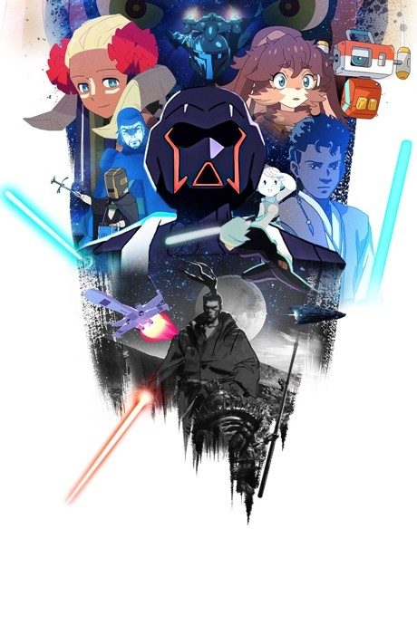

AnimeStar Wars: Visions
スター・ウォーズ：ビジョンズ
An original anime, so there's no book to continue with.
7.0AniList
—Animeter
26 ep3 seasons
3 seasons, 26 episodes
In airing order. Episode numbers on this site count straight through every season, so season 2 starts at episode 10.
1
2021 · Web
Star Wars: Visions
Episodes1–99 ep
2
2025 · Web
Star Wars: Visions Volume 3
Episodes10–189 ep
3
2026 · Web
Star Wars: Visions Presents - The Ninth Jedi
Episodes19–268 ep
Sources: AniList